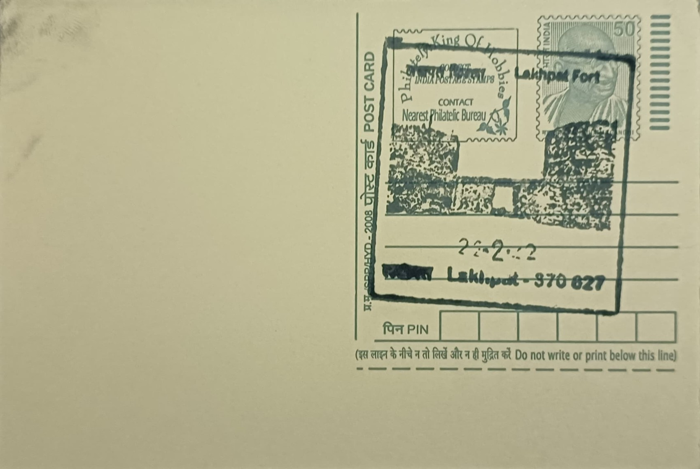

Lakhpat Fort, Kachchhh
લખપત કિલ્લો, કચ્છ


Lakhpat takes its name, meaning town of a lakh (hundred thousand), from an era when its daily earnings from maritime trade reportedly exceeded one lakh kori, the silver currency then in circulation under Kutch's rulers. Local tradition also links the settlement to Rao Lakha, a thirteenth-century ruler of Sindh, though it was the town's later role as a customs post on the Indus delta's now-vanished waterways that cemented the name in popular use. Sitting on a bluff overlooking what was once a navigable creek connecting to the Arabian Sea, Lakhpat grew from a modest settlement into one of western Kutch's most important trading towns before the river that sustained it changed course.
As a fortified port town, Lakhpat occupied a position of considerable commercial and strategic importance through the eighteenth and early nineteenth centuries, serving as a customs checkpoint for goods moving along the Indus trade routes and a garrison town guarding Kutch's northwestern frontier. Its significance was never purely commercial: the settlement developed into a rare meeting point of faiths, housing a Hindu temple, Jain dharamshalas, a Sikh gurdwara, and Islamic tombs and mosques within a single walled enclosure, a plurality that distinguished it from most contemporary Kutchi towns. Today the fort and its structures are protected under state heritage provisions and are maintained as an archaeological and pilgrimage site rather than a living township, with the gurdwara in particular drawing Sikh pilgrims from across India.
The fort in its present form was substantially rebuilt and enlarged around 1801 by Fateh Muhammad, a military commander serving under the Rao of Kutch, who extended the fortifications into the roughly seven-kilometre circuit of walls that survive today. Built of hard brown stone in an irregular polygonal plan, the ramparts rise to about twenty feet in height, reinforced by twenty-four bastions and round towers and pierced by four main gateways, with the fort's defensive layout designed to control both the land approach and the creek-side harbour below. Later command of the fort passed to Jamadar Mohim Miyan, under whom the settlement reached its commercial peak before the silting of the Indus channel and the 1819 earthquake began the town's long decline.
Among Lakhpat's most striking individual structures is the domed tomb, known locally as the Kubo, built for the Sufi saint Pir Ghaus Muhammad, a revered Sayyed figure said to have been venerated by Hindus and Muslims alike for his ascetic reputation. Constructed in black stone after his death in 1855 by his brother using contributions from followers, the mausoleum stands on a square platform roughly fifty-four feet across, its octagonal chamber rising into a conical dome over sixty feet high, with four richly carved arched doorways and interior walls bearing floral patterning alongside Quranic inscriptions, the grave itself set beneath a white marble canopy. The sixteenth-century gurdwara nearby, built on the site where Guru Nanak is believed to have rested during two of his missionary journeys in the early 1500s, preserves relics including a carved wooden bookcase and sandals attributed to the Guru and his son Sri Chand.
The Archaeological Survey of India and Gujarat's state archaeology department have carried out periodic conservation work on the fort walls and several of its tombs, which suffered renewed structural damage in the 2001 Bhuj earthquake, while the gurdwara continues to be managed separately by its Sikh caretaker trust, which organizes an annual gathering of pilgrims. With its resident population now reduced to a small fraction of its nineteenth-century size, Lakhpat functions today chiefly as a heritage and pilgrimage destination within the Great Rann of Kutch circuit, visited by history enthusiasts, Sikh devotees tracing Guru Nanak's route, and travellers drawn to its unusually quiet, walled expanse near the Pakistan border.
| Date of Introduction | February 2, 2021 |
|---|---|
| Address | Branch Postmaster, |
| Lakhpat BO, | |
| Kachchh (dt.), Gujarat - 370627. |